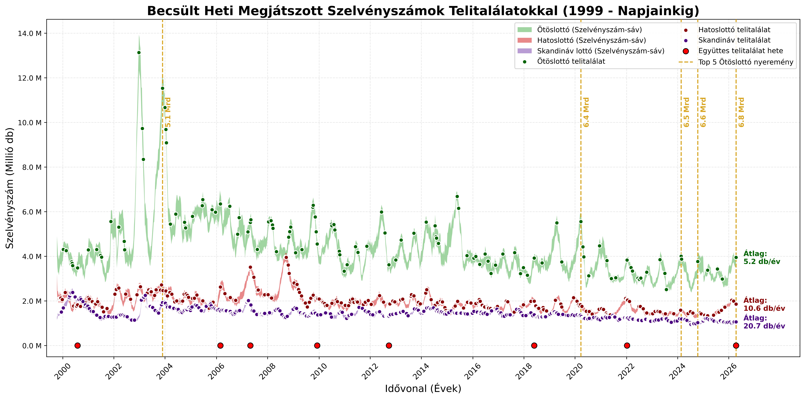
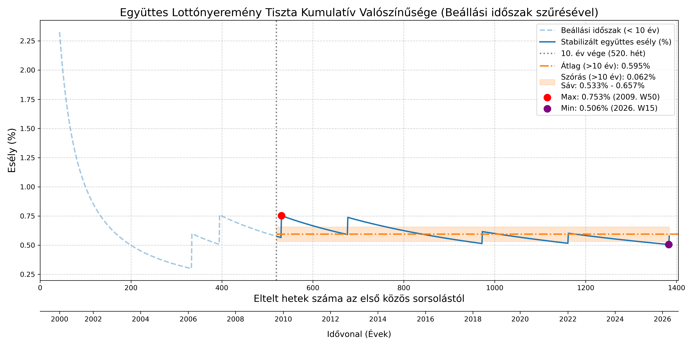
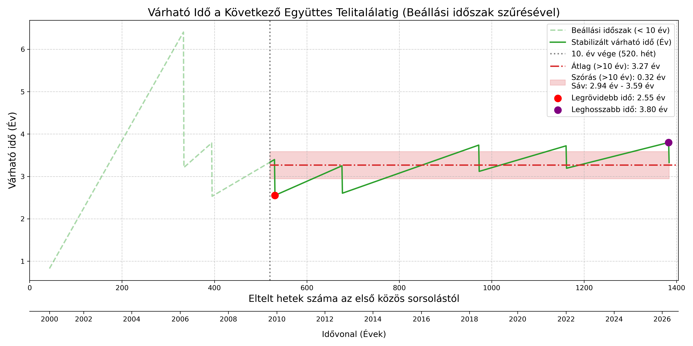

Együttes Lottónyeremények Esélye Magyarországon
1. Dilemma
A Szerencsejáték Zrt. három játékában is egyazon héten született telitalálatos szelvény. Ezek:
| Játék | Dátum |
|---|---|
| Skandináv lottó | 2026.04.15 |
| Ötöslottó | 2026.04.18 |
| Hatoslottó | 2026.04.19 |
Mekkora a matematikai esélye annak, hogy egyetlen héten Magyarország három legnépszerűbb számsorsjátékán egyaránt szülessen telitalálatos szelvény?
Ennek az együttállásnak a valószínűségét keressük.
2. Historikus Tényadatok: Megtörtént-e már valaha a valóságban?
Érdemes vizsgálni, hogy a valóságban hányszor fordult elő a három játék együttes telitalálata.
Mivel a Skandináv lottó (amely a három játék közül a legfiatalabb) 1999. legvégén indult útjára, a vizsgálatot innentől számítom.
A nyers történelmi adatok
A három lottójáték közös történelme 1384 teljes naptári hetet ölel fel (közel 27 évnyi sorsolást).
A szűrési feltételek alapján olyan heteket kerestem, ahol a hivatalos nyereményjegyzék szerint az Ötöslottón, a Hatoslottón és a Skandináv lottón is játszottak telitalálatos szelvényt.
A lottótörténelem 1384 közös hete alatt 8 alkalommal fordult elő ez az esemény.
Az együttes telitalálatok historikus időpontjai
Az alábbi heteken játszottak mindhárom lottón telitalálatos szelvényt:
| Sorszám | Év | Naptári Hét |
|---|---|---|
| 1. | 2000. | 31. hét |
| 2. | 2006. | 9. hét |
| 3. | 2007. | 18. hét |
| 4. | 2009. | 50. hét |
| 5. | 2012. | 39. hét |
| 6. | 2018. | 22. hét |
| 7. | 2022. | 2. hét |
| 8. | 2026. | 16. hét |
Historikus valószínűség
A tapasztalati valószínűség az alábbi:
\[P_{historikus} = \frac{\text{Bekövetkezések száma}}{\text{Összes vizsgált hét}} = \frac{8}{1384} \approx 0,00578\]
Ez százalékosan kifejezve 0,578%, ami nagyságrendileg:
\[1 : 173\]
Magyarán átlagosan minden 173. héten történik meg, hogy mindhárom lottón legyen telitalálatos szelvény.
Naptári évekre visszabontva a tényleges történelmi várakozási idő:
\[E_{y} = \frac{173}{52} \approx 3,33 \text{ év}\]
3. Az Eddigi Játékoskedv és a Telitalálatok ábrázolása
Érdemes vizuálisan megtekinteni, hogy adott lottójátékban milyen gyakran, milyen sűrűn születik telitalálatos szelvény. Ezt az alábbi ábra szemlélteti azon becsült értékekkel együttesen, hogy adott héten mennyi szelvényt játszhattak meg a játékosok.
A Szerencsejáték Zrt. kizárólag azt teszi közzé, hogy adott találat mellett hány nyerő szelvény volt (pl. x darab 2-es találat, y darab 3-as találat, z darab 4-es találat, stb.
Ebből viszont már lehet következtetni arra, hogy összesen kb. mennyi szelvényt játszottak meg a játékosok. Ezen következtetések minimum és maximum értékeit jelenítettem meg az alábbi sávdiagramban, feltüntetve benne * a mindenkori telitalálatos szelvények előfordulását, * a top 5 legnagyobb nyereményt, * azon események időpontját, amikor mindhárom játékban volt telitalálatos szelvény.

4. A Nagy Számok Törvénye: Tiszta kumulatív esély a kezdetektől és a beállási időszak
Ebben a megközelítésben a közös lottótörténelem legelső hetétől indul a számlálás (1999. 41. hét). Minden eltelt héten a vizsgált sorsolások száma (a nevező) eggyel nő, míg az együttes telitalálatok száma (a számláló) kizárólag azokon a heteken ugrik meg, amikor megtörténik a ritka együttállás.
A beállási időszak (első 10 év) leválasztása
A kumulatív gyakoriság a kezdeti években rendkívül érzékeny: egy kis elemű halmazban egyetlen bekövetkezett telitalálat is irreálisan felhúzza az esélyt, míg a hiánya túlzott pesszimizmust sugall. Annak érdekében, hogy a lottójátékok valódi, hosszú távú trendjét vizsgáljam, a számítást két szakaszra bontottam:
Beállási időszak (0-10. év): A rendszer inicializációs fázisa (az első 520 hét), ahol a statisztikai ingadozás még túl magas.
Stabilizált időszak (10. évtől napjainkig): Ahol a nagy számok törvénye már érvényesül, és az esélyek beállnak a valós matematikai várakozás köré.
A statisztikai átlagot és a szórást, valamint a szélsőértékeket kizárólag a 10 évnyi adat felhalmozódása utáni (stabilizált) tartományban vizsgáltam.
A stabilizált historikus adatok szélsőértékei
A 10. év letelte (2009. vége) utáni historikus adatokban az alábbi két szélsőértéket azonosítottam:
| Paraméter | Maximális esély (2009. 50. hét) | Minimális esély (2026. 15. hét) |
|---|---|---|
| Kumulatív telitalálat esélye | \(0.753\%\) | \(0.506\%\) |
| Várható várakozási idő | \(2.55 \text{ év}\) | \(3.80 \text{ év}\) |
| Eltelt hetek száma (N) | \(531 \text{ hét}\) | \(1383 \text{ hét}\) |
Vizuális elemzés
Az alábbi grafikonok vizuálisan ábrázolják a rendszer stabilizálódását. A függőleges szaggatott vonal jelzi a 10. év végét, amelytől balra a beállási időszak áttetsző formában jelenik meg.


Paraméterek összegzése
Kizárólag a 10. évet követő, stabil historikus időszakot alapul véve a magyar lottótörténelem kumulatív mutatói a három lottójáték együttes telitalálatára a következők:
\[Átlagos \ stabilizált \ esély: \ 0.595\%\] \[Átlagos \ várható \ ido: \ 3.27 \ év\]
Szórási mező határai (\(\pm 1 \sigma\)): * Valószínűség esetén: \([0.533\%, \ 0.657\%]\) * Várható időtartam esetén: \([2.95 \text{ év}, \ 3.59 \text{ év}]\)
A Tripla Telitalálat Időpontjai, Összevetve a Magas Nyereményekkel és a Tripla Telitalálat Kumulatív Valószínűségével

Az ábrán az látszik, hogy
a tripla telitalálat gyakorisága és időpontja nem jár együtt a magas nyeremények időpontjával.
A tripla telitalálat gyakorisága periodikus és magas szórással, de közel azonos időközönként történik meg.
5. Elméleti Megközelítés és Elméleti Validálás
A következő részben bemutatom a játékosok számosságának kalkulációját és annak validálását az alapján, hogy a játékban mennyi szelvényt tesznek meg. Ezt a legutóbbi hét számai alapján teszem meg, amelyben mindhárom játékon született telitalálat. A megjátszott szelvények száma befolyásolják ezeket a valószínűségeket, így tudni kell egy jó becslést adni.
Szükséges paraméterek és az elvi lépések
A számításhoz ismerni kell a leadott szelvények számát (\(N\)).
A számítás lépései a következők:
Külön-külön meg kell határozni annak az esélyét, hogy egy adott játékon születik legalább egy telitalálatos szelvény.
Ha \(p\) a telitalálat esélye egyetlen szelvénnyel, akkor annak az esélye, hogy egyetlen szelvény nem nyer: \(1 - p\).
Annak az esélye, hogy az összes eladott \(N\) darab szelvény közül egyik sem nyer (vagyis nincs telitalálat az országban):
\[(1 - p)^N\]
Ebből következik a komplementer (kiegészítő) esemény: annak a valószínűsége, hogy legalább egy telitalálat születik az adott játékon:
\[P_{nyertes} = 1 - (1 - p)^N\]
Mivel az Ötöslottó, a Hatoslottó és a Skandináv lottó sorsolásai egymástól független események (az egyik kimenetele nincs hatással a másikra), az együttes bekövetkezésük valószínűsége a különálló valószínűségek szorzata:
\[P_{együttes} = P_{ötös} \cdot P_{hatos} \cdot P_{skandináv}\]
A szelvényszámok becslésének módszere
A Szerencsejáték Zrt. nem teszi minden héten közzé a feladott szelvények számát. Azt azonban közlik, hogy az egyes nyerőosztályokban (találatokban) pontosan hány darab nyertes volt. Ebből az adatból statisztikai úton megbecsülhető a megjátszott szelvények száma.
A számítási módszer alapja a hipergeometrikus eloszlás, amely megadja egy adott \(k\) találat bekövetkezésének elméleti esélyét (\(P(k)\)). Ha ismerjük a nyertesek számát, az összes feladott szelvény száma (\(N\)) kifejezhető:
\[N = \frac{\text{Nyertes szelvények száma}}{P(k)}\]
A nagy számok törvénye alapján minél nagyobb a statisztikai minta, annál pontosabb a becslés. A telitalálat ritka, így abból pontatlan becsülni. A legprecízebb eredményt úgy kapjuk, ha a két legnagyobb mintaszámú (tehát leggyakoribb) találatból fejtjük vissza az adatokat, és ezek alapján egy minimum és maximum szelvényszám intervallumot határozunk meg.
5️⃣ Ötöslottó (5/90)
Heti nyereményadatok:
| Találat | Szelvények száma |
|---|---|
| 5 találat | 1 |
| 4 találat | 54 |
| 3 találat | 3 985 |
| 2 találat | 103 455 |
A számítási módszer: Az összes lehetséges kombináció \(\binom{90}{5} = 43\ 949\ 268\).
\(k\) találat matematikai esélye: \[P(k) = \frac{\binom{5}{k} \cdot \binom{85}{5-k}}{\binom{90}{5}}\]
Behelyettesítve a képletekbe az értékekkel:
5-ös találat (\(p\)): \[P(5) = \frac{\binom{5}{5} \cdot \binom{85}{0}}{43\ 949\ 268} = \frac{1 \cdot 1}{43\ 949\ 268} \approx \frac{1}{43\ 949\ 268}\] Kalkulált részvétel: \(1 \cdot 43\ 949\ 268 \approx 43.9 \text{ millió szelvény}\)
4-es találat: \[P(4) = \frac{\binom{5}{4} \cdot \binom{85}{1}}{43\ 949\ 268} = \frac{5 \cdot 85}{43\ 949\ 268} \approx \frac{1}{103\ 410}\] Kalkulált részvétel: \(54 \cdot 103\ 410 \approx 5.58 \text{ millió szelvény}\)
3-as találat (Nagyobb minta): \[P(3) = \frac{\binom{5}{3} \cdot \binom{85}{2}}{43\ 949\ 268} = \frac{10 \cdot 3570}{43\ 949\ 268} \approx \frac{1}{1\ 231}\] Visszaszámolt részvétel: \(3\ 985 \cdot 1\ 231 \approx 4.91 \text{ millió szelvény}\)
2-es találat (Legnagyobb minta): \[P(2) = \frac{\binom{5}{2} \cdot \binom{85}{3}}{43\ 949\ 268} = \frac{10 \cdot 98770}{43\ 949\ 268} \approx \frac{1}{44.5}\] Visszaszámolt részvétel: \(103\ 455 \cdot 44.5 \approx 4.6 \text{ millió szelvény}\)
A nagy számok törvénye értelmében a 2-es és 3-as találatok adatait veszem alapul.
\[\text{Minimum, maximum}\] \[[4\ 600\ 000, \ 5\ 000\ 000]\]
6️⃣ Hatoslottó (6/45)
Heti nyereményadatok (egy sorsolásra vonatkozóan):
| Találat | Szelvények száma |
|---|---|
| 6 találat | 1 |
| 5 találat | 8 |
| 4 találat | 733 |
| 3 találat | 13 781 |
A számítási módszer: Az összes lehetséges kombináció \(\binom{45}{6} = 8\ 145\ 060\).
\(k\) találat matematikai esélye egyetlen sorsoláson (\(p\)): \[P(k) = \frac{\binom{6}{k} \cdot \binom{39}{6-k}}{\binom{45}{6}}\]
Behelyettesítve a képletekbe az értékekkel:
6-os találat (\(p\)): \[P(6) = \frac{\binom{6}{6} \cdot \binom{39}{0}}{8\ 145\ 060} = \frac{1 \cdot 1}{8\ 145\ 060} \approx \frac{1}{8\ 145\ 060}\] Kalkulált részvétel: \(1 \cdot 8\ 145\ 060 \approx 8.14 \text{ millió szelvény}\)
5-ös találat: \[P(5) = \frac{\binom{6}{5} \cdot \binom{39}{1}}{8\ 145\ 060} = \frac{6 \cdot 39}{8\ 145\ 060} \approx \frac{1}{34\ 808}\] Kalkulált részvétel: \(8 \cdot 34\ 808 \approx 278 \text{ ezer szelvény}\)
4-es találat (Nagyobb minta): \[P(4) = \frac{\binom{6}{4} \cdot \binom{39}{2}}{8\ 145\ 060} = \frac{15 \cdot 741}{8\ 145\ 060} \approx \frac{1}{732.8}\] Kalkulált részvétel: \(733 \cdot 732.8 \approx 537 \text{ ezer szelvény}\)
3-as találat (Legnagyobb minta): \[P(3) = \frac{\binom{6}{3} \cdot \binom{39}{3}}{8\ 145\ 060} = \frac{20 \cdot 9139}{8\ 145\ 060} \approx \frac{1}{44.56}\] Kalkulált részvétel: \(13\ 781 \cdot 44.56 \approx 614 \text{ ezer szelvény}\)
A nagy számok törvénye alapján a 3-as és 4-es találatok adatait veszem alapul, így kapok egy sorsolásonkénti minimum és maximum értéket (530 000 és 620 000).
Megjegyzés: Mivel a Hatoslottón hetente két független sorsolás van, a heti játékkedvet (\(N_{heti}\)) ennek megduplázásával kapjuk meg:
\[N_{heti} = N_{sorsolás} \cdot 2\]
\[\text{Heti minimum, maximum intervallum}\] \[[1\ 060\ 000, \ 1\ 240\ 000]\]
7️⃣ Skandináv lottó (7/35)
Heti nyereményadatok:
| Találat | Szelvények száma |
|---|---|
| 7 találat | 1 |
| 6 találat | 58 |
| 5 találat | 1 987 |
| 4 találat | 31 143 |
A számítási módszer (Ikersorsolás): A Skandináv lottónál egy szelvénnyel két független sorsoláson (kézi és gépi) veszünk részt. Az egy sorsolásra eső összes kombináció \(\binom{35}{7} = 6\ 724\ 520\).
Miben másabb ennek a számítása? Mivel a játékos ugyanazzal a számsorral mindkét sorsoláson részt vesz, előfordulhat, hogy egyetlen szelvénnyel a kézi és a gépi húzáson is elér például egy 4-es találatot. A hivatalosan közölt “nyertesek száma” emiatt nem a nyertes embereket, hanem a kifizetett találatok várható számát (\(E\)) jelenti. Mivel két húzás van, a kifizetett nyeremények száma kétszerese annak, amit egyetlen sorsolásnál várnánk. Ebből a megjátszott szelvények valós száma (\(N\)) a következőképpen számolható vissza:
\[N = \frac{E}{2 \cdot p}\]
Ahol \(p\) az adott \(k\) találat matematikai esélye egyetlen sorsoláson:
\[p = \frac{\binom{7}{k} \cdot \binom{28}{7-k}}{\binom{35}{7}}\]
Behelyettesítve a képletekbe az értékekkel:
7 találat (A telitalálat valós esélye): A telitalálat esélyét máshogy számoljuk, mert ott arra vagyunk kíváncsiak, mekkora a valószínűsége annak, hogy a két sorsolás közül legalább az egyiken kihúzzák a számainkat.
Annak az esélye, hogy egy húzáson nem nyerünk: \(1 - p\).
Annak az esélye, hogy egyik húzáson sem nyerünk: \((1 - p)^2\). Ebből következik, hogy a telitalálat valós (egyesített) esélye (\(P_{telitalálat}\)):
\[P_{telitalálat} = 1 - \left(1 - \frac{1}{6\ 724\ 520}\right)^2 \approx \frac{1}{3\ 362\ 260}\]
(Kalkulált részvétel: \(1 \cdot 3\ 362\ 260 \approx 3.36 \text{ millió szelvény}\) - statisztikai anomália a ritkaság miatt.)
6 találat:
\[p = \frac{\binom{7}{6} \cdot \binom{28}{1}}{6\ 724\ 520} = \frac{7 \cdot 28}{6\ 724\ 520} = \frac{196}{6\ 724\ 520}\]
Kalkulált részvétel: \(N = \frac{58}{2 \cdot (196 / 6\ 724\ 520)} \approx 994 \text{ ezer szelvény}\)
5 találat (Nagyobb minta):
\[p = \frac{\binom{7}{5} \cdot \binom{28}{2}}{6\ 724\ 520} = \frac{21 \cdot 378}{6\ 724\ 520} = \frac{7\ 938}{6\ 724\ 520}\]
Visszaszámolt részvétel: \(N = \frac{1\ 987}{2 \cdot (7\ 938 / 6\ 724\ 520)} \approx 841 \text{ ezer szelvény}\)
4 találat (Legnagyobb minta):
\[p = \frac{\binom{7}{4} \cdot \binom{28}{3}}{6\ 724\ 520} = \frac{35 \cdot 3276}{6\ 724\ 520} = \frac{114\ 660}{6\ 724\ 520}\]
Visszaszámolt részvétel: \(N = \frac{31\ 143}{2 \cdot (114\ 660 / 6\ 724\ 520)} \approx 913 \text{ ezer szelvény}\)
A nagy számok törvénye értelmében a 4-es és 5-ös találatok adatait veszem alapul.
\[\text{Minimum, maximum}\] \[[840\ 000, \ 1\ 000\ 000]\]
Kiértékelés és Összegzés
Most, hogy mindhárom játék heti intervallumait és nyerési esélyeit meghatároztam, kiszámítható a főnyeremények megnyerésének játékonkénti esélye, majd a teljes, együttes valószínűség is. A játékonkénti esélyeket a korábban ismertetett \(1 - (1 - p)^N\) képlettel határozom meg..
Összesített Táblázat (Heti szelvényszámokkal kalkulálva):
| Lottó neve | \(p\) érték (Telitalálat) | Minimum szelvényszám | Maximum szelvényszám | Min. heti esély a nyertesre | Max. heti esély a nyertesre |
|---|---|---|---|---|---|
| Ötöslottó | \(1 : 43\ 949\ 268\) | 4 600 000 | 5 000 000 | 9.94% | 10.76% |
| Hatoslottó | \(1 : 8\ 145\ 060\) | 1 060 000 | 1 240 000 | 12.20% | 14.12% |
| Skandináv lottó | \(\approx 1 : 3\ 362\ 260\) | 840 000 | 1 000 000 | 22.11% | 25.73% |
Az Együttes Bekövetkezés Valószínűsége
Végül, a három független esemény valószínűségét összeszorozva megkapjuk a végső eredményt, azaz annak az esélyét, hogy a vizsgált héten mindhárom játékban született telitalálat.
Minimum Részvétel (Worst-case) esetén az esély: \[P_{min} = 0.0994 \cdot 0.1220 \cdot 0.2211 \approx 0.00268\] Eredmény: Ez 0.268%, amely arányszámban kifejezve nagyjából 1 a 373-hoz esélyt jelent.
Maximum Részvétel (Best-case) esetén az esély: \[P_{max} = 0.1076 \cdot 0.1412 \cdot 0.2573 \approx 0.00391\] Eredmény: Ez 0.391%, amely arányszámban kifejezve körülbelül 1 a 256-hoz esélynek felel meg.
Konklúzió: Években kifejezett valószínűség
Milyen időközönként történhet ez meg? Tegyük fel, hogy a lottójátékokat továbbra is minden naptári héten (azaz évente 52 alkalommal) megrendezik, és a vizsgált hétről visszafejtett játékkedv nagyjából ezen a szinten marad. Ezt a heti esélyekre levetítve a következő időléptékeket kapjuk:
- A worst-case forgatókönyvnél (1 a 373-hoz esély) statisztikailag \(373 / 52 \approx \textbf{7.2}\) évente következik be ez az együttállás.
- A best-case forgatókönyvnél (1 a 256-hoz esély) pedig statisztikailag \(256 / 52 \approx \textbf{4.9}\) évente.
Összegzés: Feltételezve a fenti szelvényszámokat, a nagy számok törvénye és a valós, heti húzások számának figyelembevételével átlagosan 5 - 7 évente egyszer fordul elő olyan hét Magyarországon, amikor az Ötöslottó, a Hatoslottó és a Skandináv lottó sorsolásán is megnyerik a főnyereményt.